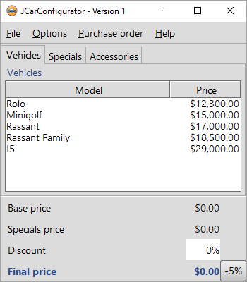
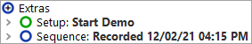
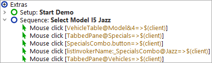

| Version 6.0.3 |
You're now ready to record some actions for our demo:
|
|  | ||
|
| Figure 2.8: Recording actions on the JCarConfigurator Demo | ||
You'll find the recorded sequence placed in the "Extras" section:
|
|  | ||
|
| Figure 2.9: The Recorded Sequence | ||
The recorded sequence has a default name with date and time of the recording. You can change this name as you see fit by simply clicking on the node and changing its properties in the details view on the right.
|
|  | ||
|
| Figure 2.10: The Renamed Sequence | ||
Now, let us replay the recorded sequence.
You should now see exactly the same sequence of mouse events executed in the SUT as you recorded before.
The sequence is supposed to replay (even multiple times) without errors. You should see "Finished: No error" in the bottom right corner of your test-suite window.
| Last update: 9/6/2022 Copyright © 2002-2022 Quality First Software GmbH |